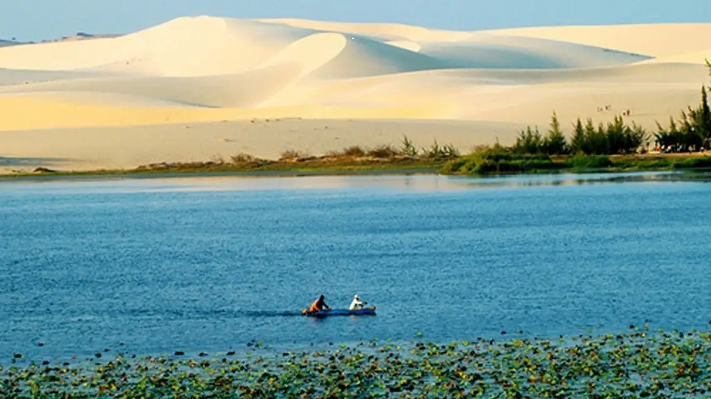
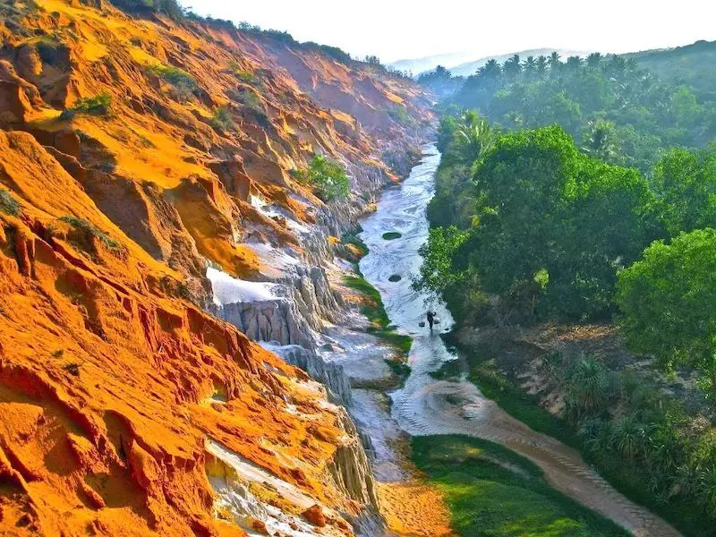
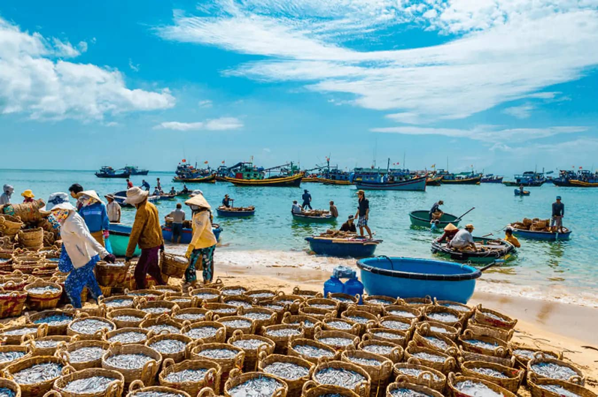
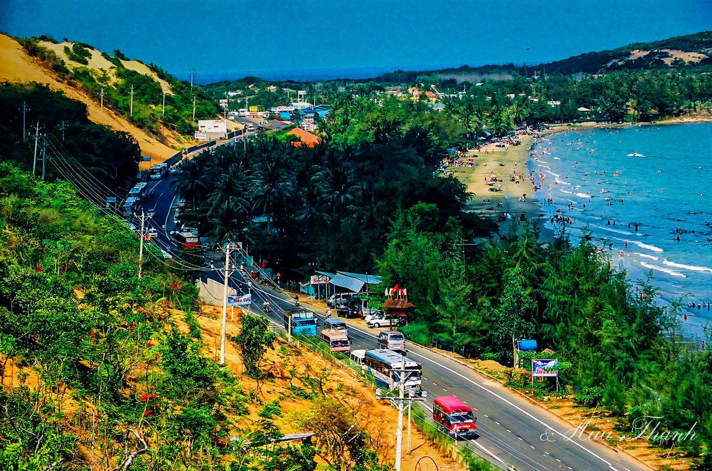
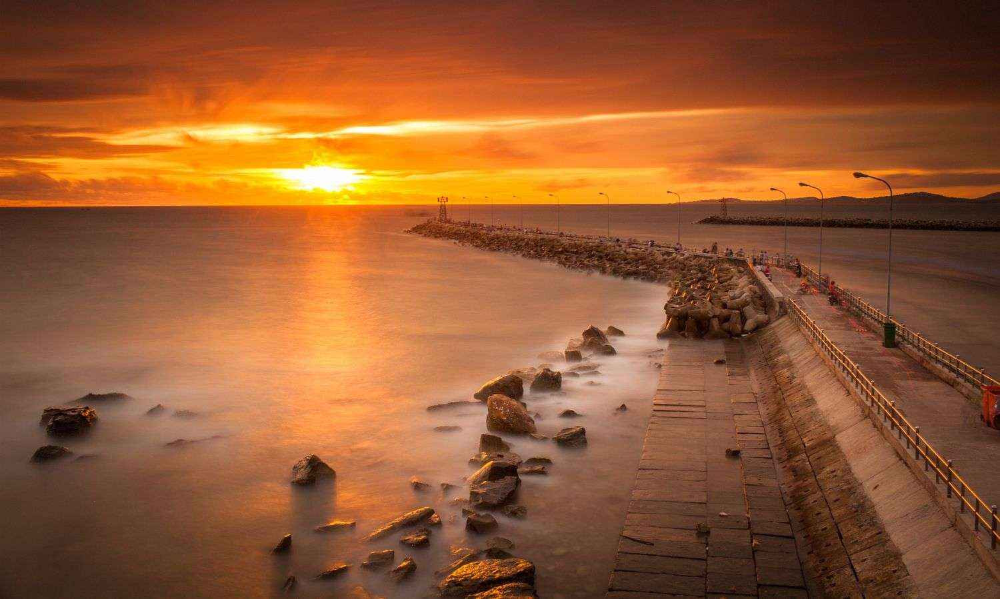
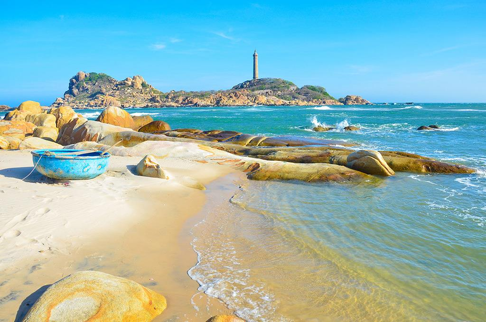

Giới Thiệu Tour
Mũi Né là điểm đến nổi tiếng của Bình Thuận, được yêu thích bởi biển xanh, đồi cát vàng, nắng ấm quanh năm và không khí nghỉ dưỡng nhẹ nhàng.
Tour Mũi Né Đồi Cát Bay 3 ngày 2 đêm đưa du khách khám phá đồi cát bay, Bàu Trắng, Suối Tiên, làng chài Mũi Né, biển Hòn Rơm và thưởng thức hải sản tươi ngon.
Điểm Nổi Bật
Đồi Cát Bay
Check-in giữa những triền cát vàng thay đổi hình dáng theo gió.

Bàu Trắng
Khám phá hồ nước xanh giữa đồi cát trắng, cảnh quan rất độc đáo.

Suối Tiên
Dạo chân trần theo dòng suối nhỏ giữa vách cát đỏ và thiên nhiên thơ mộng.

Làng Chài Mũi Né
Cảm nhận nhịp sống bình dị của ngư dân và những thuyền thúng ven biển.

Biển Hòn Rơm
Tắm biển, nghỉ ngơi và tận hưởng làn gió mát từ vùng biển Bình Thuận.

Hoàng Hôn Trên Cát
Ngắm ánh chiều phủ vàng trên đồi cát, tạo nên khung cảnh rất ấn tượng.
Ẩm Thực Hải Sản
Thưởng thức mực, tôm, ghẹ, cá nướng và các món đặc sản ven biển.

Góc Check-in Nắng Gió
Nhiều góc ảnh đẹp với cát vàng, biển xanh, xe jeep và trời trong.
Lịch Trình Chi Tiết
Ngày 1 — Khởi Hành Đến Mũi Né
06:30 — Khởi hành từ TP.HCM hoặc điểm hẹn đã đăng ký.
11:30 — Đến Mũi Né, dùng bữa trưa với đặc sản địa phương.
14:00 — Nhận phòng khách sạn, nghỉ ngơi.
15:30 — Tự do tắm biển Hòn Rơm và chụp ảnh ven biển.
18:30 — Ăn tối với hải sản tươi ngon.
20:00 — Tự do dạo biển, khám phá Mũi Né về đêm.
Ngày 2 — Đồi Cát, Suối Tiên Và Làng Chài
05:00 — Khởi hành sớm đi ngắm bình minh tại đồi cát bay.
06:30 — Check-in Bàu Trắng, trải nghiệm xe jeep trên cát.
09:00 — Tham quan làng chài Mũi Né, tìm hiểu đời sống ngư dân.
11:30 — Dùng bữa trưa tại nhà hàng địa phương.
14:00 — Dạo Suối Tiên, chụp ảnh với vách cát đỏ đặc trưng.
17:00 — Ngắm hoàng hôn trên biển hoặc đồi cát.
19:00 — Ăn tối, tự do nghỉ ngơi.
Ngày 3 — Tạm Biệt Mũi Né
07:30 — Ăn sáng tại khách sạn.
08:30 — Tự do tắm biển, uống cà phê hoặc mua đặc sản Bình Thuận.
10:30 — Làm thủ tục trả phòng.
11:30 — Dùng bữa trưa nhẹ trước khi rời Mũi Né.
13:00 — Khởi hành về lại điểm đón ban đầu.
18:00 — Kết thúc tour, hẹn gặp lại quý khách.
Bảng Giá Tour
| Đối Tượng | Giá / Người | Ghi Chú |
|---|---|---|
| Người lớn | 4.200.000 ₫ | Bao gồm xe đưa đón, khách sạn, bữa ăn và tham quan theo lịch trình. |
| Trẻ em 5–11 tuổi | 3.000.000 ₫ | Có ghế ngồi riêng, ngủ chung phòng với người lớn. |
| Trẻ em dưới 5 tuổi | Miễn phí | Ngồi cùng người lớn, chưa bao gồm chi phí phát sinh riêng. |
| Phụ thu phòng đơn | +500.000 ₫ | Áp dụng khi khách muốn ở một mình một phòng. |
Giá đã gồm: xe du lịch, khách sạn, bữa ăn theo chương trình, hướng dẫn viên, bảo hiểm và vé tham quan cơ bản.
Đánh Giá Khách Hàng
4.8 / 5 ★★★★★
127 đánh giá từ khách đã tham gia tour.
Trần Thảo My
Lịch trình vừa phải, có thời gian tắm biển và nghỉ ngơi. Mình thích nhất lúc ngắm hoàng hôn trên cát.
Lê Đức Anh
Tour phù hợp với nhóm bạn, cảnh đẹp, khách sạn sạch và hướng dẫn viên nhiệt tình.
Nguyễn Hoàng Phúc
Đồi cát rất đẹp, đi jeep vui và nhiều góc chụp ảnh. Hải sản cũng rất tươi.